k-Day 159｜南部的口音
今日突破哩程紀錄，來到150公里。
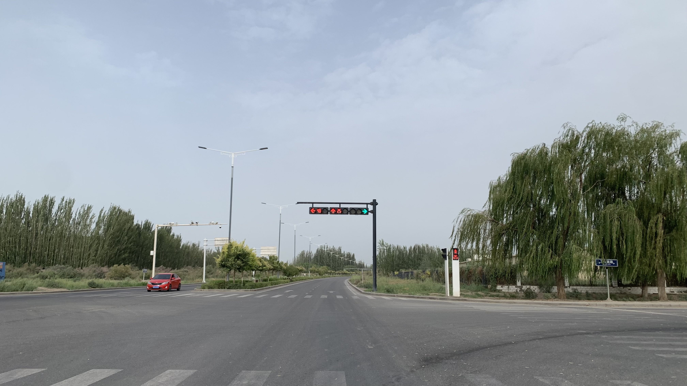
出發時就觀察到風向是順順的側風，風勢還不小。
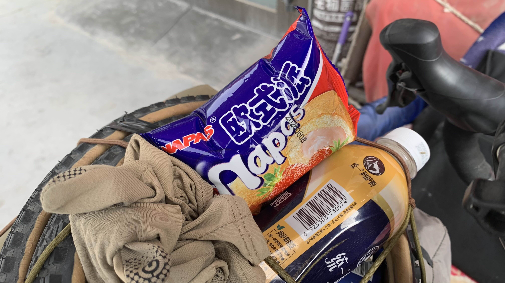
到新疆後不知為啥變成愛喝奶茶吃蛋糕的體質，這個草莓捲是沒見過的新品種，買來當備用糧食。
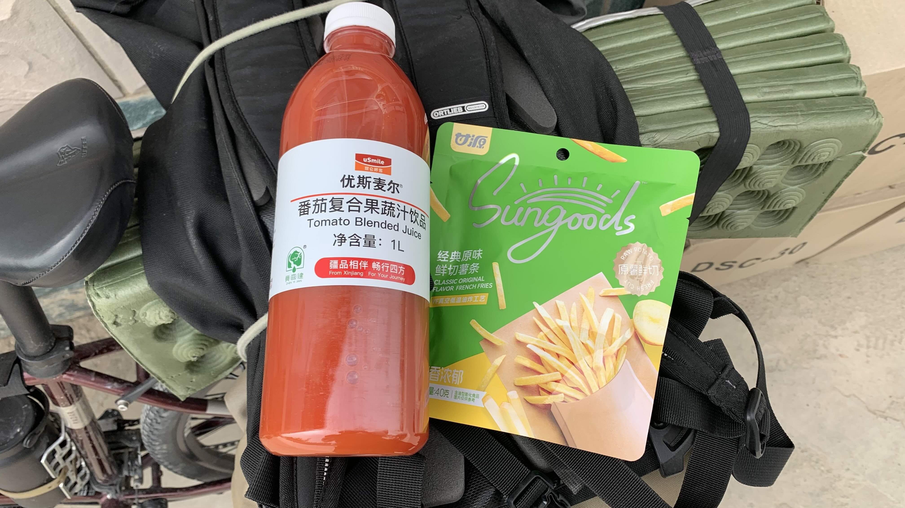
下午的國道上只有一間休息站，離開最後一間加油站前又補充了一瓶番茄汁和沒見過的薯條零食。
現在明顯看出上面的配置相當有問題，水在哪裡呢？
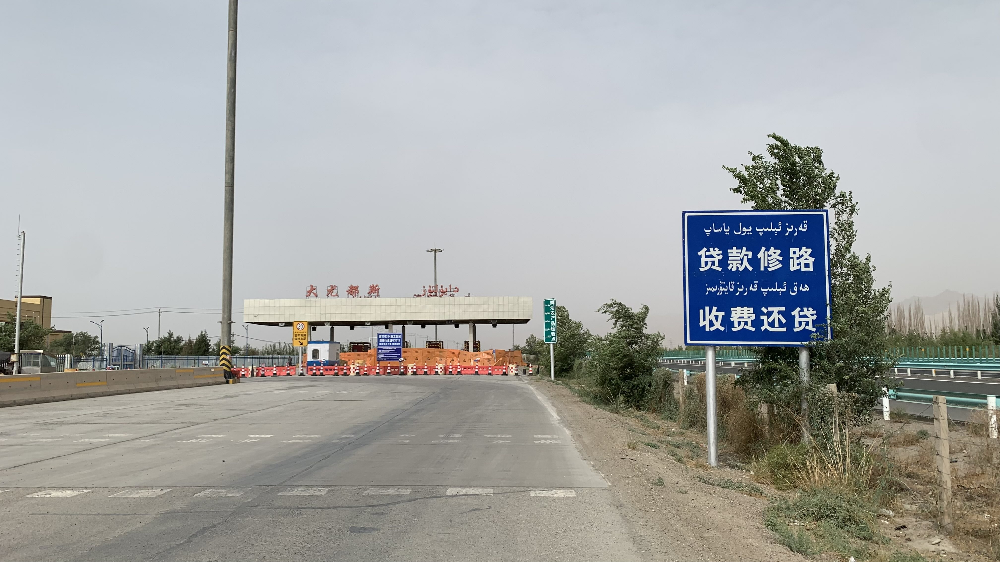
收費站旁立了一面「貸款修路 收費還貸」的告示，想到一路上聽說各地區政府種樹、修路、治沙後拖欠工人款項的事蹟，這告示還算誠實的。
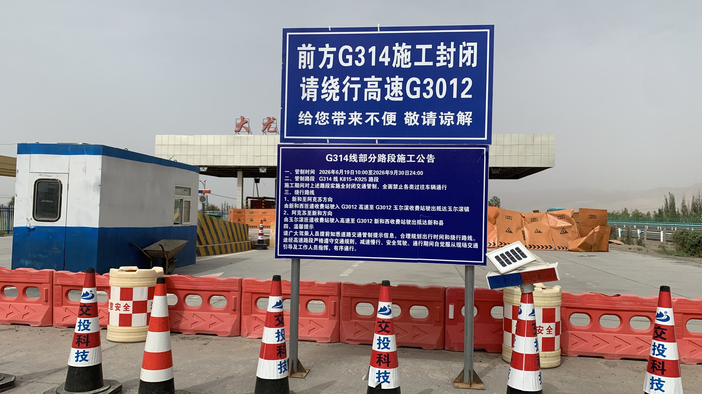
封路了...周圍就只有一條高速公路，自行車也上不去，這該怎麼辦才好？
施工人員看到我，招手讓我過去，只交代了一句：「小心騎啊！」
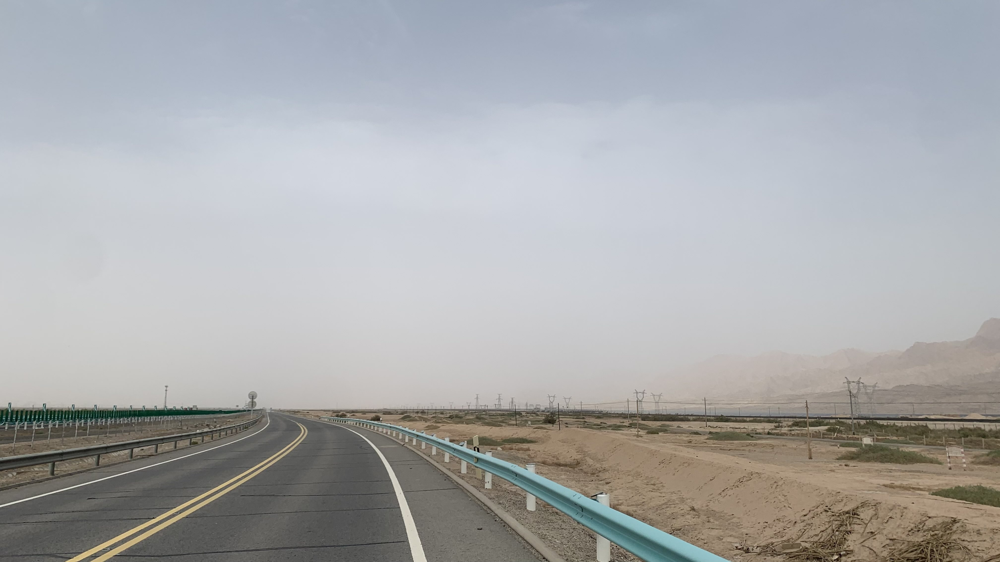
前後110公里封閉管制，整條鋪設良好的道路只有我一個人。
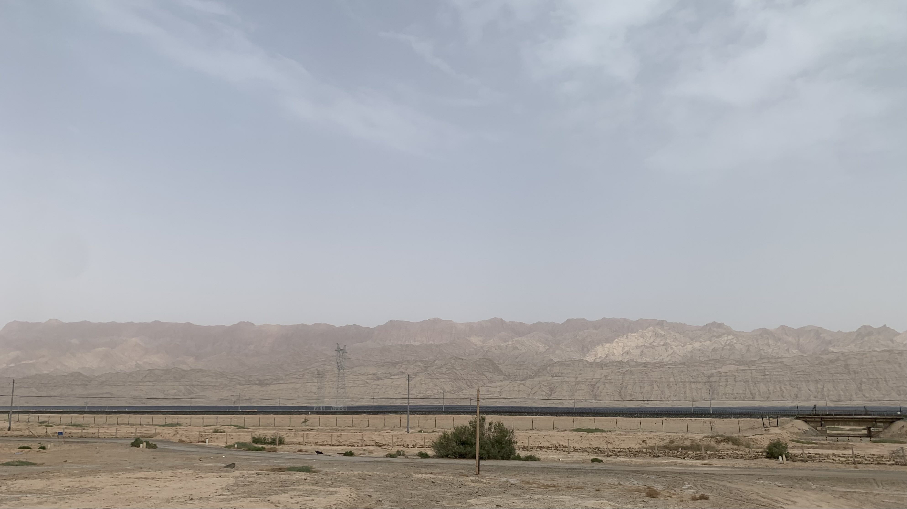
右邊這座低清山脈，是見過玄奘的山，心裡有種澎湃激動的感覺。
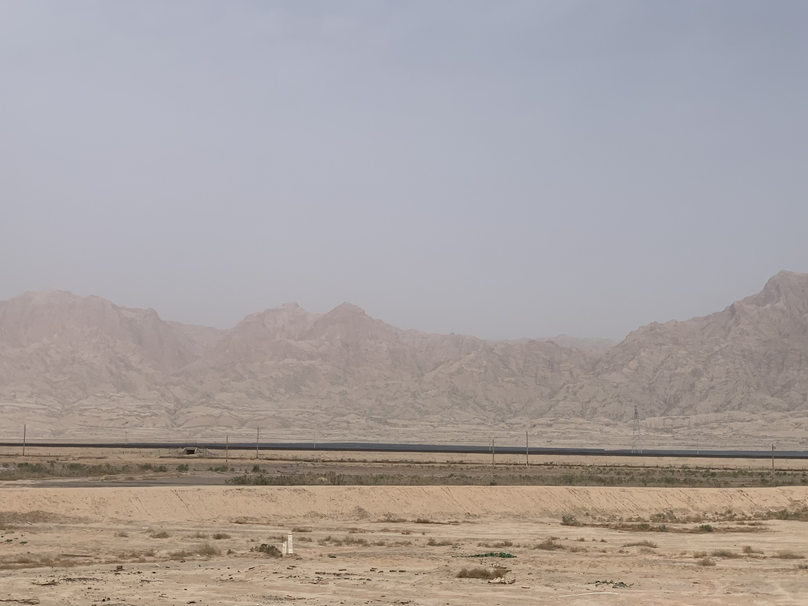
沒有別的風景，一路上都是這座山。沙塵太大，肉眼看來相當模糊。
手機已經發熱到無法開機，地圖上標記的休息站是隔壁高速公路的，雖然就在路旁，卻被鐵網圍繞著。
110公里管制，不就代表整條路上沒有水，也不會有任何人經過這裡嗎？看看早上買的奶茶和番茄汁，怎麼就沒想到要多買一瓶水呢？
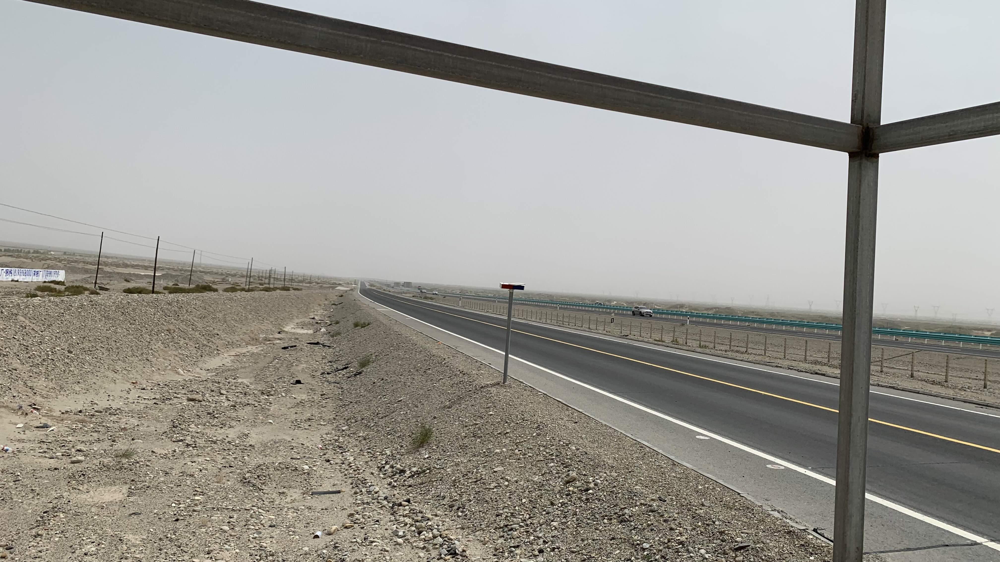
一路上都沒有遮蔽，好不容易看到交警站，躲到鐵皮搭起的棚子下面遮陽。喝掉昨天買的，早已發熱的最後一口氣水，不敢消耗其它液體。口腔內膜變得黏黏的，還是趕緊出發吧。
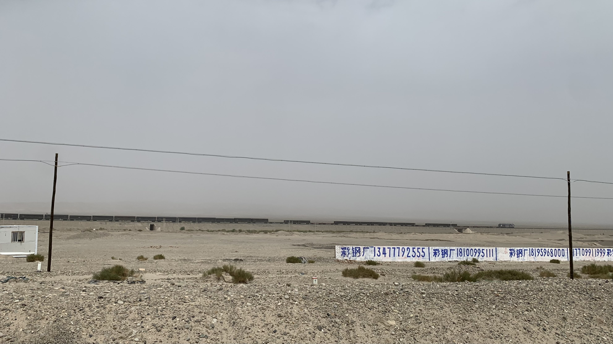
遠處不時出現拉煤礦的火車，以礦產資源來說，新疆地區政府應該是全國最富裕的吧。
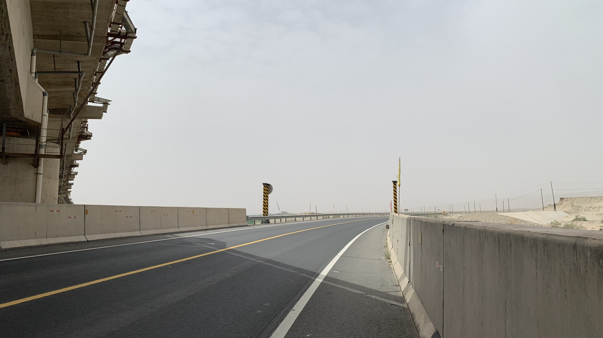
騎了一段路，終於經過一座高架橋，整條公路幾乎沒有遮蔽，趕緊躲在下面降溫。背後的順風過大，停止不動還得消耗力量穩住身體，不得不繼續前進。
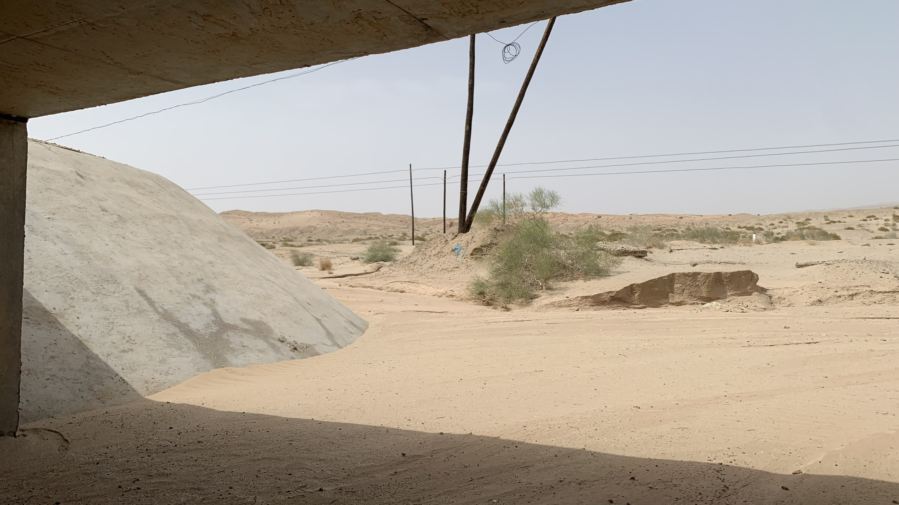
又騎了好遠的距離，連番茄汁都只剩一半，頭有點痛，決定躲到公路下的涵洞，等到五點再出發。
雖然躲在洞裡，還是不斷消耗番茄汁，外面的太陽和吹進洞裡的熱風都沒有減緩的趨勢，在番茄汁剩下250ml左右時決定離開此處繼續前進。
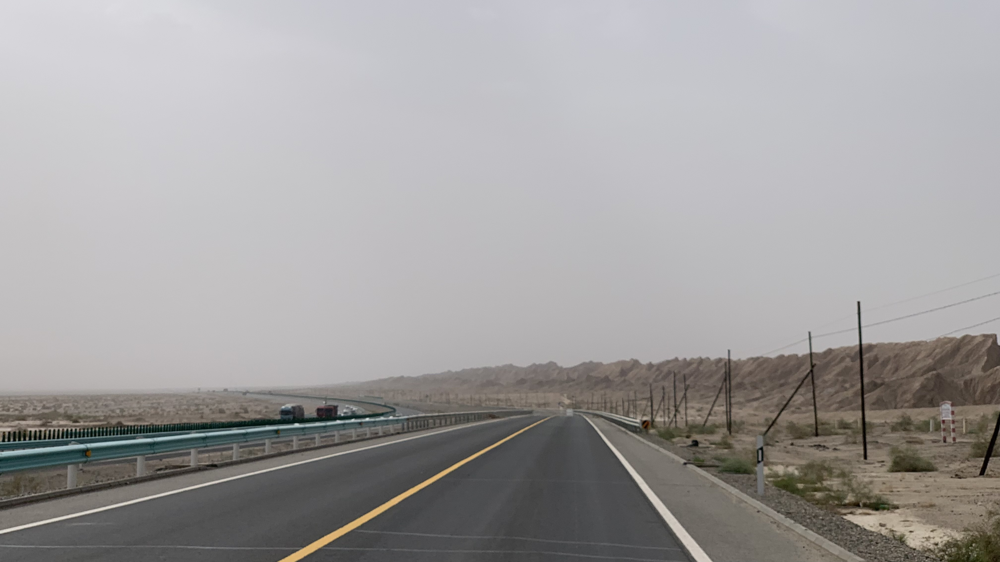
對向車道經過一輛黑色休旅車，趕緊把手舉高對著他揮手，車子毫不減速駛離我身邊。
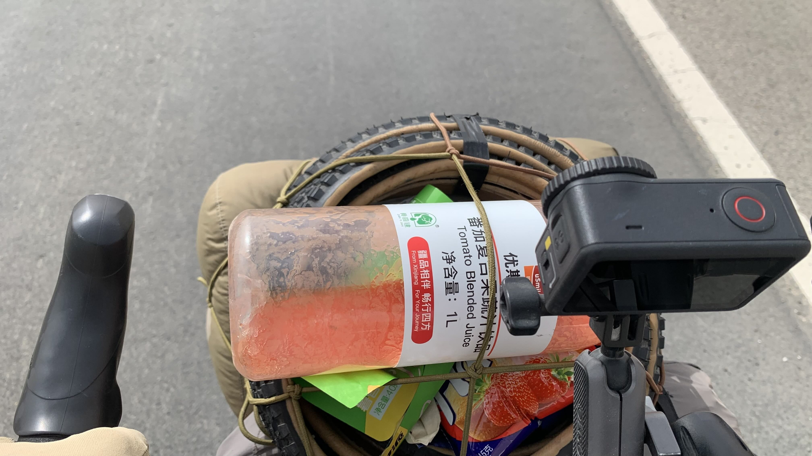
番茄汁只剩兩口，水壺裡的水大概還有50ml。
後方出現轎車引擎聲，一輛白車經過我，趕緊在空中對著車尾巴招手。車子停下來了！騎到車門邊，雖然很不好意思，還是直接開口：「請問你們有水嗎？」開車的是一位爸爸，後面坐著的應該是他女兒，兩個人聽到水，立刻在座位前後左右摸索，很遺憾，車內沒有水。「我女兒剛回來，車上沒有水。」爸爸說。「這裡有八寶粥，你要嗎？」女兒從後座下方拿出一瓶娃哈哈八寶粥。「要的！謝謝你們！」我立馬接過。
「前面就快到頭了。」白車開走後公路上又剩下我一人。
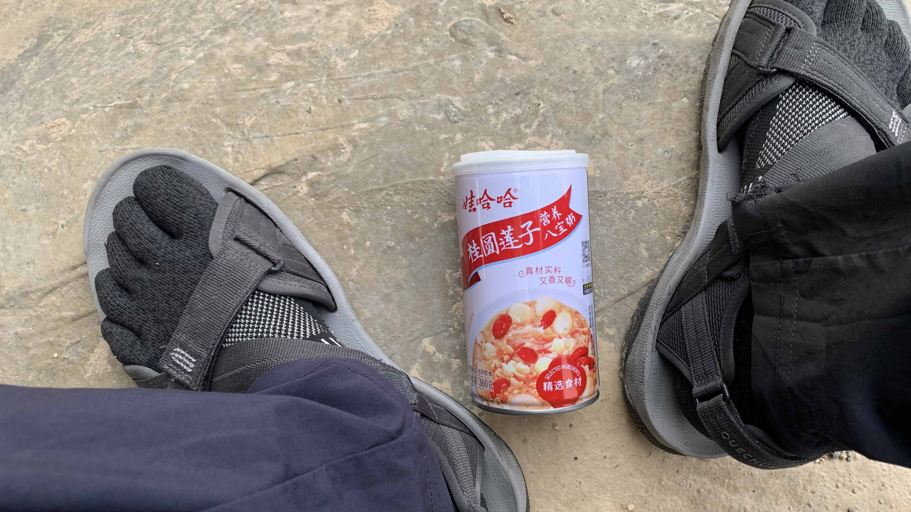
八寶粥應該也有一半的液體吧，將二十三號靠在路旁，躲到公路高於地面製造出的陰影斜角，把整罐八寶粥倒進肚子裡。誰知道到頭還得多久呢。
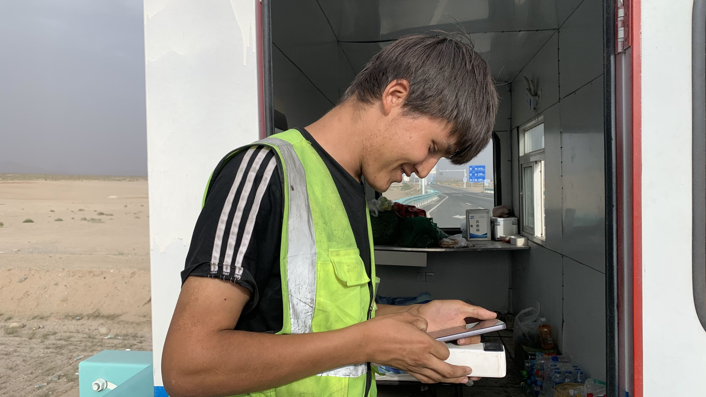
重新上路後竟然吹起不小的逆風，為了不讓自己大量流汗，維持著相當緩慢的前進速度。
終於看到了，管制區結束的地方有個貨櫃屋。從小窗裡看到一名年輕人躺在涼椅上。推著二十三號到門口問：「請問你有水嗎？」
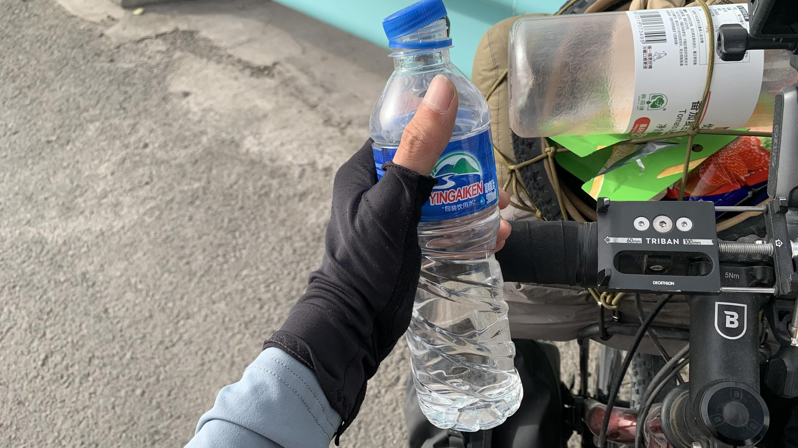
他聽完後拿出貨櫃屋裡的礦泉水遞給我。幫礦泉水拍照後，只花了三秒，瓶子裡的水就全都進到胃裡。正當我舉高瓶子，讓最後一滴水也流進嘴裡，他拍拍我的肩膀，遞給我一瓶農夫山泉。
「自己的水都喝完了吧？」他笑著問。
「是的。真是太感謝你了」我說。
「一路上都沒有遮蔭吧？」他說。這句不是問句，但我還是回答了「是的」。
他轉身從貨櫃屋裡抓了一把杏仁果乾，看著我把果乾塞進網球褲口袋後，轉身走到管制區的欄杆旁替我開路。
此人是救命恩人。
離開管制區再過幾公里會有一座加油休息站，喝了整瓶水，已經沒問題了。
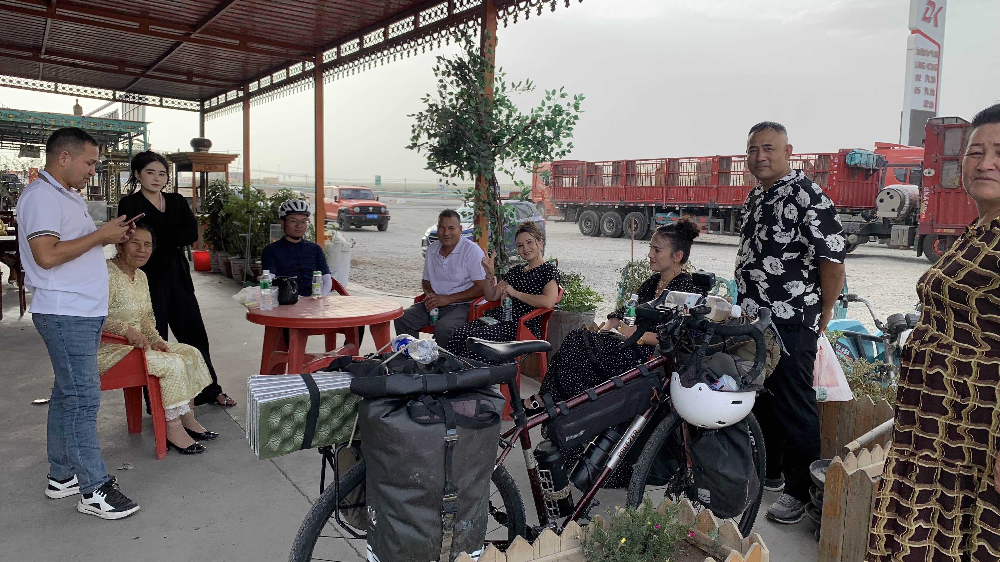
推著二十三號來到休息站的人群邊，這些人看我不敢坐下，就揮手讓我過去。
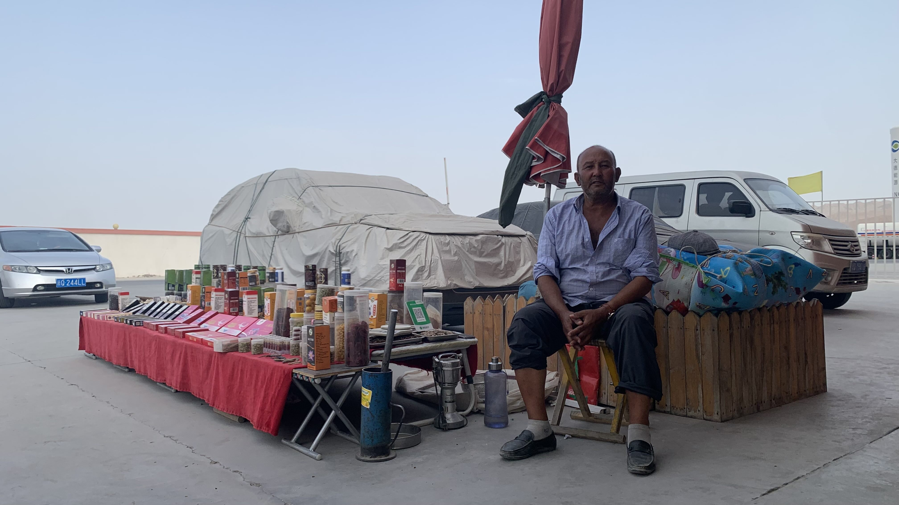
將二十三號靠在花圃邊，一屁股坐到地上。左上方立刻伸出一隻手，手上拿了一瓶冰涼的茉莉綠茶。
反射性地抬頭說了一句：「Rehmet」圍著我的人們眼睛都撐大了一秒。
「我說的對嗎？」有點尷尬的詢問。坐在中間穿黑色圓點禮服的女子點點頭。他們問了我從哪裡騎過來、騎了多久、是哪裡人等問題後，開始全面維語輸出。中途照片左邊穿白色polo衫的男子問我：「你聽得懂一點點？」當然聽不懂。照片右邊穿黑禮服的年輕女子跟我說：「他們在稱讚你。」
越來越多人加入討論，每個人看起來都是打扮過的，沒有一句聽得懂，但是氣氛相當熱鬧。黑色圓點禮服的女性和我說：「我們是從喀什來參加婚禮的，今天要坐五個小時的車回去。」
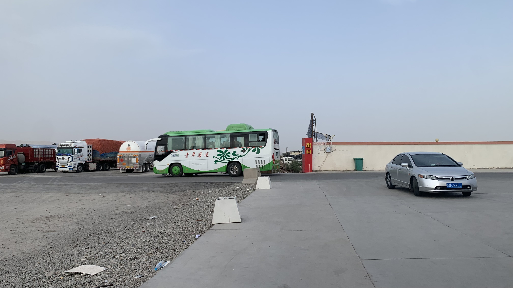
這輛是他們的大巴車，到喀什只要五小時，我得騎五、六天吧。
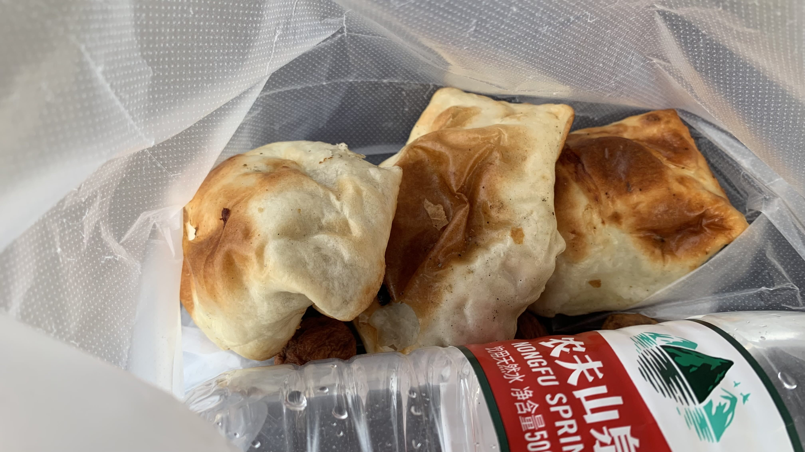
人潮陸續從旁邊的餐廳出來，往大巴車方向移動。和他們說了再見，坐在地上目送大家上車。黑色圓點禮服的女性上車不久又從車上跑下來，手上拿了三塊像胡椒餅一樣的食物：「這給你吃，是烤包子。」說完又小跑步回到車上。
請我喝茉莉綠茶的大叔看到我手上抓著烤包子，立刻拿了一個塑膠袋讓我裝上，並示意杏仁果乾也一起丟進去。
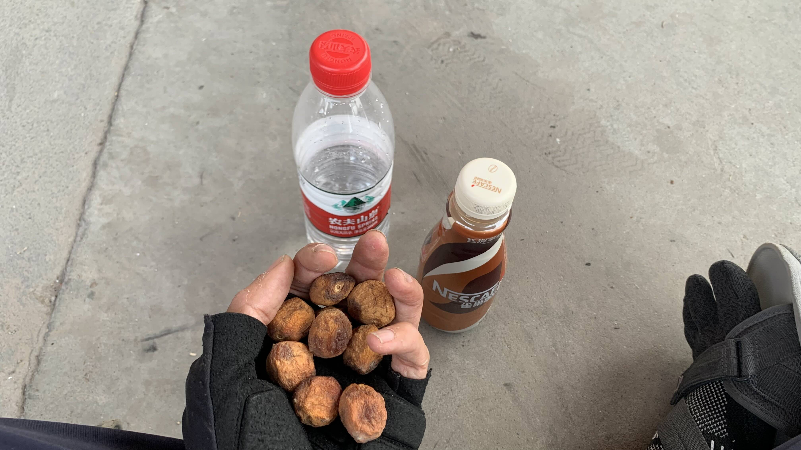
喔，也得幫杏仁果乾和農夫山泉拍張紀念照，這是今天的恩人賞賜的。
天色暗了，將帳篷搭在休息站的角落。南部的口音真讓人懷念。
今日花費：咖啡 6、飲料 11元